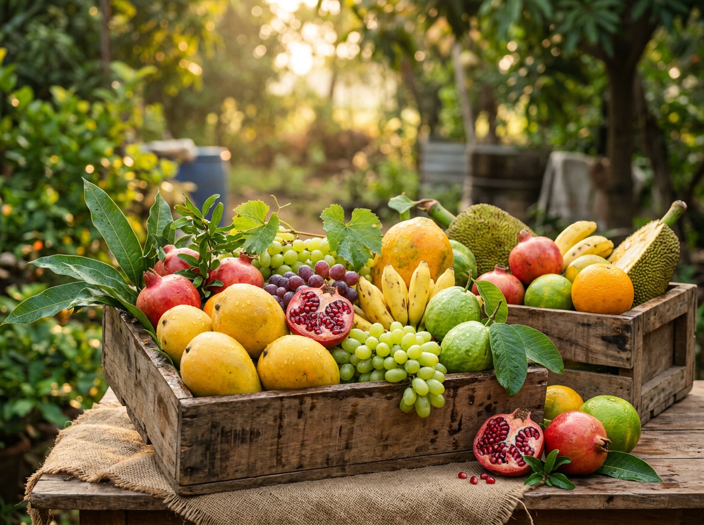
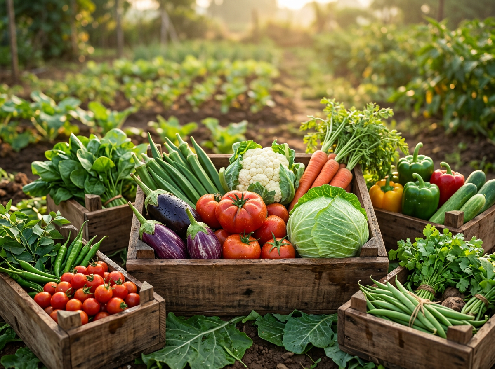
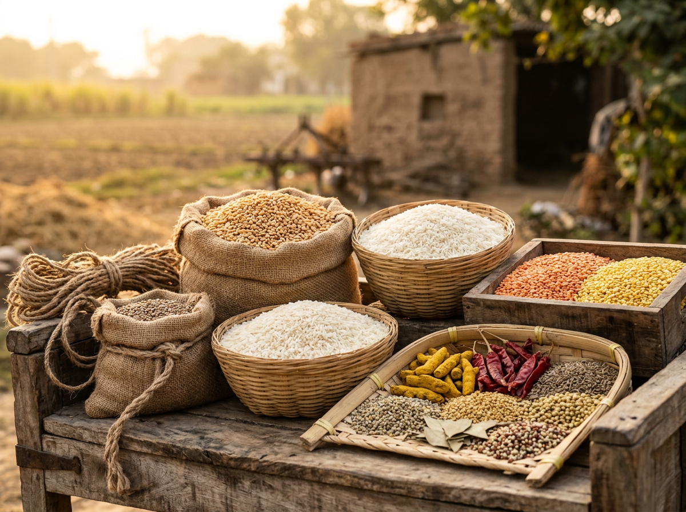

Chemical-Free
Naturally cultivated produce sourced with care for freshness and quality.
Connecting trusted farmers with homes, restaurants, hotels, caterers and institutions through transparent, chemical-free sourcing.
Let's talk about your sourcing needs.
We respect your time. No spam. No sales pressure.Fresh produce, trusted partnerships and dependable supply— all backed by transparent sourcing.
Naturally cultivated produce sourced with care for freshness and quality.
We work directly with reliable farming partners who share our commitment to quality.
Consistent sourcing for restaurants, hotels, caterers, corporate cafetarias and institutions.
Carefully sourced produce that brings freshness, quality and consistency to every order.



Every harvest begins with trusted farming relationships and reaches your business through transparent sourcing and reliable delivery.
We work closely with farming communities, eliminating unnecessary middle layers.
Every harvest is carefully selected to maintain freshness and consistency.
Clear sourcing practices built on long-term relationships and trust.
From farm to business with dependable logistics and timely deliveries.
Whether you operate a restaurant, hotel, catering service or institution, we're ready to become your trusted sourcing partner for fresh, naturally cultivated produce.